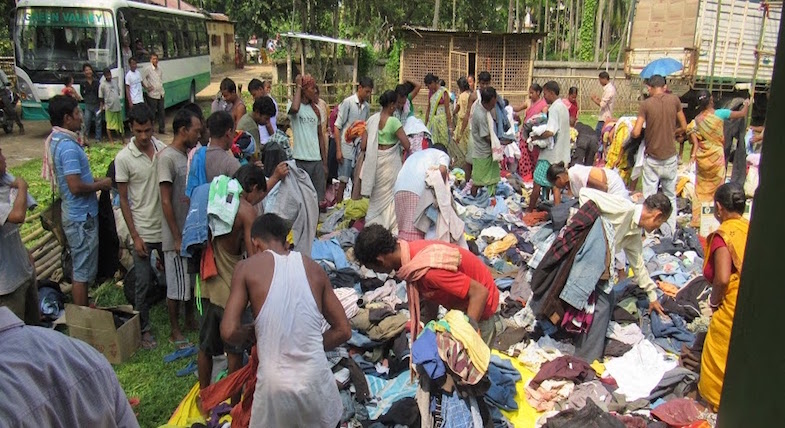

VISAKA Abhiyan
VISAKA or the Vittiya Saksharta Abhiyan is a program launched by the government of India to enhance the growth of a cashless economy in India. The recent events have led to a financial revolution in the Indian Economy and as the country aims to grow into a cashless society, the government of India plans to accelerate the process with the help of VISAKA. The shift to a cashless economy will lead to better social equity, availability of more resources for development work through higher revenue collection, eradication of counterfeit currency, a reduction in illegal transactions and a curb on black money.
VISAKA or the Vittiya Saksharta Abhiyan is a program launched by the government of India to enhance the growth of a cashless economy in India. The recent events have led to a financial revolution in the Indian Economy and as the country aims to grow into a cashless society, the government of India plans to accelerate the process with the help of VISAKA. The shift to a cashless economy will lead to better social equity, availability of more resources for development work through higher revenue collection, eradication of counterfeit currency, a reduction in illegal transactions and a curb on black money.
The primary purpose of the `Vittiya Saksharta Abhiyan’ is to actively engage the youth/ students of Higher Educational Institutions to encourage and motivate all payers and payees to use a digitally enabled cashless economic system for transfer of funds. The Ministry of Human Resource development sees the students of the higher Educational institutions as the engines which will play the primary role in this transformation.
The MHRD believes that the best way is to lead by example and thus it appeals to all heads of higher educational institutions to plan for a cashless campus within a stipulated time frame. The faculty, staff and students are not only required to co-operate for the same but are also expected to dispel the notion that cashless transactions are complex and necessarily require a smartphone and internet connectivity.
Moreover, they are also expected to educate their family and people in their immediate surroundings regarding online transactions. The students bodies and NSS groups can also take up large projects like teaching the market vendors and shopkeepers of a certain locality regarding the transactions and encouraging them to move to cashless transactions.
Volunteers willing to work for this transformation can also enroll on the MHRD site and update their progress on the page. Notable achievements will be acknowledged and commended.
NSS, IIT Guwahati is doing it’s best to be a part of this programme by visiting various areas in and around the campus while doing the best it can to promote cashless transactions. It is spreading awareness about swiping machines, Paytm, Bhim and other modes of cashless transactions while also providing elaborate instructions on the means to procure a swiping machine from the document requirements to the transaction limits.
In the lesser educated areas, NSS is also teaching people about bank accounts and ATM cards. Volunteers gather small groups of people and discuss thoroughly about the importance of having a bank account and the process of acquiring one if you one does not have it.
Cloth Donation Drive
NSS and SAB jointly organized a donation drive for all the hostels at IITG. We are happy to announce that the drive turned out to be very successful. Relief was distributed among 1300+ flood affected people in 6 villages.
Children’s Day (November 14, 2016)
“This children's day, NSS, IIT Guwahati did their part in spreading a smile to the growing future of our country. The students of the Sila Sinduri Gopa were invited and a plethora of performances by the various clubs of IIT Guwahati was put up for them. Their inner Picasso emerged when a drawing competition was conducted by Finesse, the Fine Arts Club
Udaan - Giving Flights to Hope (November 14, 2016)
On the occasion of Children’s Day, Team Alcheringa and National Service Scheme, IIT Guwahati conducted Udaan, in association with our CSR Partner Sublime Galleria. We captured the dreams of a few students of Sila Sundari Gopa and released a book which reminds all of us to never let go of our dreams! Have a look at our at our attempt of Giving Flights to Hope!
Diwali Celebration (October 30, 2016)
On this festival of light, NSS, IIT Guwahati tried to spread some light and happiness among the students of Sila Sundari Gopa. Apart from the sweets that were distributed among them, NSS had some informal sessions with the students. The students were shown some interactive videos during this informal session apart from some games and competitions that had been planned for them. Through this, NSS tried to eradicate some sorrow and unhappiness on the festival of lights.
The festival of Diwali brings with it lots of light and lots of happiness. However, this festival of light is better celebrated through lanterns and lamps than through firecrackers. Thus, NSS, IIT Guwahati wishes all a very happy and safe Diwali while urging everyone to avoid using crackers.
National Service Scheme (October 25, 2016)
The Zero Illiteracy Zone(ZIZ) teaching project has been one of the most successful initiatives by NSS, IIT Guwahati so far. Around 50 campus students from both the UG and PG sections along with some tutors come together to teach the students there through various interactive sessions including workshops, competitions, exhibitions, labs etc. These sessions, held thrice a week, help the students in thinking outside the box and inspires their imagination. The major objective of these sessions is to help the students in gaining the basic skills necessary for a quality education
Swachh Bharat Abhiyan (October 2, 2016)
On the 2nd of October 2014, Prime Minister Narendra Modi launched the Swachh Bharat Abhiyan. This was the first time the importance of a clean India was realized by the central government. In the subsequent years, while the Swachh Bharat Abhiyan has claimed various levels of success in spreading the word, a lot of work remains undone before the actual realization of a clean India. Thus, in support of the Swachh Bharat Abhiyan, NSS IIT Guwahati launched the first cleanliness drive of the semester as a step towards a cleaner and greener campus and a cleaner and greener India.
REUSABLE ITEMS COLLECTION DRIVE FROM STUDENTS (April 17, 2016)

NSS, IIT Guwahati conducted a collection drive for reusable items from final year students in the campus. As the academic year is coming to an end, many final year students leave many reusable items in their rooms. So, the volunteers of NSS, IIT Guwahati went from room to room of every student hostel in the campus and final year students donated whatever reusable items they could. These collected items were later distributed to the underprivileged people living in the slums nearby IIT Guwahati. The collection drive was a success and many reusable items were collected.
SILA SINDURI GHOPA STUDENTS' VISIT TO IITG CAMPUS (April 16, 2016)
As a part of the regular weekly teaching project conducted by the volunteers of NSS, IIT Guwahati at Sila Sinduri Ghopa for school children, we organized a visit for those students into the campus. They had a very informative and interesting demonstration session of basic physics experiment. Concepts like Bernoulli's principle, reflection, refraction, working of electric generator and motor, basic magnetism,etc were taught by the physics department staff members Dr. Sidananda Sarma and Lokesh Chakravorty. The session was motivating and very much enjoyed by the students of Sila Sinduri Ghopa village school students.
RTI LECTURE (March 27, 2016)
In order to raise awareness about RTI activisim in India and Rti activisits, NSS, IIT Guwahati organized a lecture in the campus by prominent lawyer and RTI activist Mr. Gurupreet Singh. The lecture involved a hands-on discussion on how to become an RTI activist and the finer details involved in the job. After the lecture there was a question and answer session in which many students raised intelligent questions and enlightening discussions took place. The students were thoroughly satisfied with the lecture and showed enthusiasm towards such a profession.